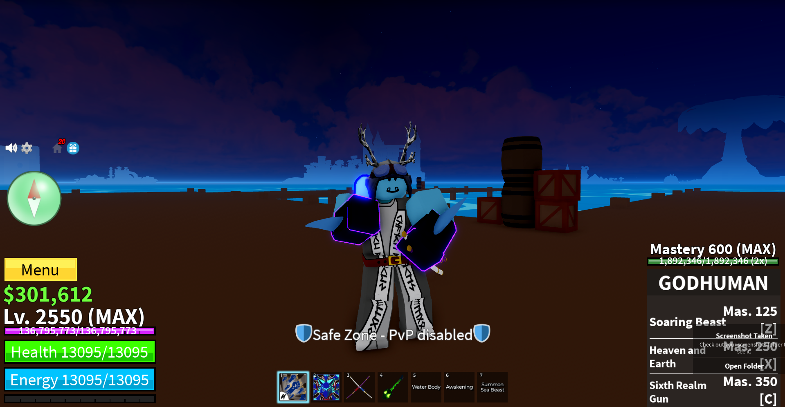

What is Blox Fruits?
- Blox Fruits
- is an online fighting game with hundreds of different setups and builds for your liking.
The game
requires a metric ton of grinding and thus people cheat often by getting bot
accounts. This game has
something known as devil fruits and each fruit has different
passives and abilities to help you max out
really quick. These passives are different for
each fruit and even the worst abilities can still be used
due to its incredible passive.
My favorite thing to do in Blox fruits is pvp, and due to pvp, I need to learn blox fruits comboes
Blox Fruit Comboes are
- hard
- Fun(when landed)
- VERY annoying to the opponent
- Killers of time
- Incredible HP drain
- unique to its user
Each combo is different for each build. There is no "real"
best combo in the game, though there are some comboes
that perform WAY BETTER than others.
For example: (I will be using the actual terms that the community also uses).
- Kitsune C + X
- Godhuman X + Godhuman Z + Godhuman C
- CDK X + CDK Z(hold)
- Soul Guitar Z + Soul Guitar X
- (Aim at player) Kitsune Z + Kitsune F + Kitsune M1's.
You must also keep in mind to do ALL OF THESE STEPS IN
ORDER and in QUICK SUCCESSION to land the combo.
This is my original copy:

There are so many build you can choose from and some people really MASTER the art of comboing
Like
- Goujoshiki
- NoveExility
- Iblisec
And Possible many more players we haven't heard of.
And thats why I love the game. The thrill of fighting
and meeting these people is over the roof, I do want
to meet them which is why I played this game and
fell inlove with it.